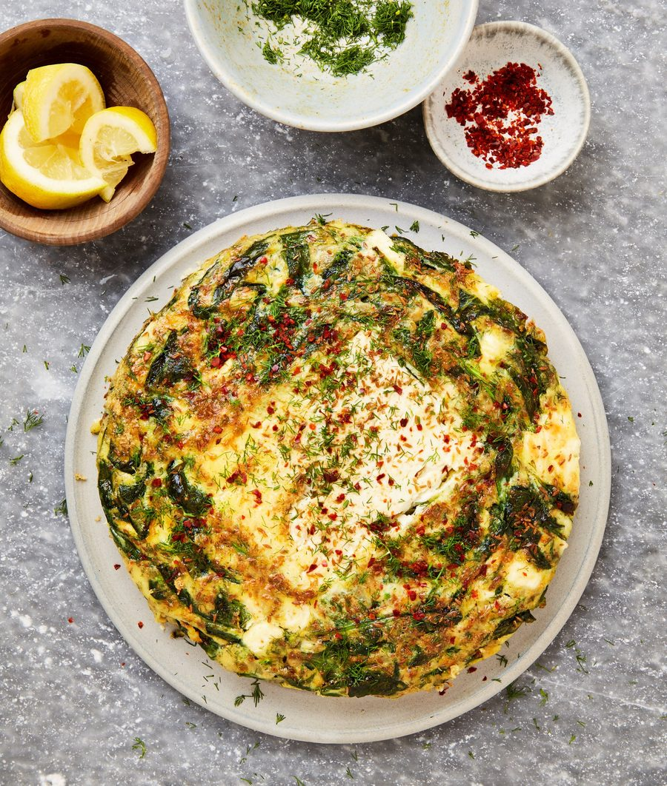

Baked feta and dill frittata

If ever there was a way to feature feta, it’s this frittata, where a block of the cheese sits perfectly in the middle. I consider it a breakfast dish, but it also works just as well as a summer lunch or as part of a picnic spread.
Heat the oven to 180C (160C fan)/350F/gas 4. Break the eggs into a medium bowl, add a half-teaspoon of salt and a good grind of pepper, whisk well and set aside.
Use a ruler to measure the thickness of the block of feta – if it’s thicker than 1½cm, carefully trim it down to this thickness and crumble any offcuts into the egg mixture. Keep the rest of the feta block whole.
Place a small (roughly 17cm-wide), nonstick, ovenproof saute pan on a medium-high heat and add 45ml oil. Once it’s hot, add a teaspoon of cumin, cook for a minute until fragrant, then add the chopped onion and a quarter-teaspoon of salt and cook, stirring occasionally, for three minutes, until the onion is translucent. Stir in the spinach and all but a tablespoon of the dill, and cook for two minutes, until the spinach has wilted and the dill is fragrant.
Pour the beaten egg into the pan and stir to combine with the onion, spinach and herbs. Nestle the feta in the centre of the egg mixture, so it’s three-quarters submerged, then drizzle the remaining teaspoon of oil and the remaining half-teaspoon of cumin over the top. Transfer the pan to the oven, bake for 15 minutes, then remove and turn the oven grill to its highest setting. Once the grill is hot, pop the pan on the top shelf of the oven closest to the grill and cook for two minutes until the frittata is golden brown and the top of the feta slightly coloured.
Using a spatula, release the frittata from the bottom of the pan, then carefully slide it on to a serving plate. Sprinkle over the remaining dill and the aleppo chilli, and serve warm or at room temperature with the lemon wedges on the side.